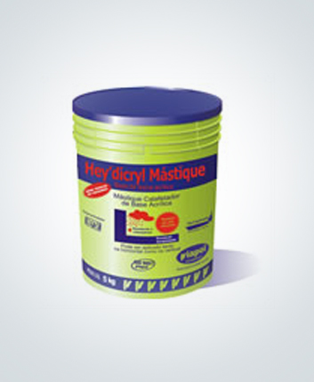
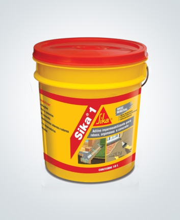

Selantes / Mastiques
Sika
Aditivo Impermeabilizante para argamassas e concretos
Rebocos internos e externos.
Revestimentos impermeáveis em: subsolos, fundações, pisos e paredes em contato com umidade do solo, piscinas, reservatórios e caixas de água, túneis e galerias.
Muros de arrimo
Argamassa de assentamento de blocos e tijolos para evitar umidade ascendente.
Concreto impermeável.
Detalhes do produto
É um impermeabilizante de pega normal para argamassa e concreto. SIKA 1 reage com o cimento durante o processo de hidratação, dando origem a substâncias minerais que bloqueiam a rede capilar, proporcionando elevada impermeabilidade à argamassa e concreto.
Características:
| Ação Principal: | Impermeabilizante de pega normal |
| Ação Secundária: | Mineral. Elevada durabilidade |
| Composição básica: | Solução aquosa de silicatos coloidais |
| Aspecto: | Cremoso |
| Cor: | Amarelo |
| Densidade a 25º C: | 1,00 a 1,10 kg/l |
| PH: | 8,5- 11,5 |
Propriedades:
- O revestimento com SIKA 1 tem grande durabilidade, uma vez que é totalmente mineral. Sua ação diminui com o tempo, isto é, seu efeito é permanente.
- Por se líquido é de fácil mistura e dosagem.
- Proporciona elevada impermeabilidade à argamassa e concreto.
- Não altera os tempos de pega (início e fim).
- Reduz a permeabilidade.
- Confere maior durabilidade.
Modo de Emprego:
Preparo da Superfície:
A superfície deverá estar limpa, não apresentar trincas, isenta de sujeiras, ponta de ferro, partículas soltas, pedaços de madeira, desmoldantes, pinturas (tintas e vernizes), hidrorrepelentes, graxas, óleos e nata de cimento. Corrigir eventuais trincas, ninhos de concretagem (bicheiras), sendo que a superfície deverá estar áspera, se necessário deverá ser feito um apicoamento manual, raspagem com escova de aço e lavagem com jato de água. Aplicar um chapisco prévio com argamassa de cimento e areia grossa, traço 1:2 ou 1:3 em volume, com SIKA CHAPISCO diluido na proporção de 1:2 (SIKA CHAPISCO : água de amassamento). Aguardar 24h para aplicação da argamassa aditivada com SIKA® 1.
Obs.: A solução SIKA 1: Água deve ser homogeneizada antes do início de cada aplicação. No preparo da argamassa impermeabilizante, só é permitido o uso de cimento Portland e areia natural, média, lavada, isenta de sais ou impurezas orgânicas. A água deve ser potável, não prepare argamassa mais do que o necessário para 30 a 45 minutos de trabalho.
a)-Revestimento externo (fachadas e muros)
- Após 24 horas da aplicação do chapisco, aplicar a argamassa de revestimento no traço de 1:2:8 a 1:2:10 (cimento : cal : areia) em volume, diluir na água de amassamento aproximadamente 3,5% a 4% de SIKA® 1 por quilo de cimento, ou seja 1,75 a 2 litros de SIKA 1 por cada saco de cimento (50 kg).
- O revestimento deverá ser aplicado de 2 a 3 camadas de 1 a 1,5 cm de espessura cada, aplicado com desempenadeira de madeira ou colher de pedreiro e pressionado contra o substrato.
- Aplicar a segunda camada de argamassa após a anterior ter “puxado” (máximo 6 horas), se ultrapassar esse intervalo, será necessário um novo chapisco como ponte de aderência, evitar ao máximo as emendas e não deixá-las coincidir nas várias camadas.
- A última camada de argamassa deverá ser desempenada com desempenadeira de madeira, nunca “alisar” ou “queimar” com desempenadeira de aço ou colher de pedreiro. Para evitar a retração da argamassa, realizar cura úmida por no mínimo 72 horas, após o endurecimento da argamassa.
b)- Piscinas e caixas d´água
- Os cantos devém ser arredondados (meia-cana) com um raio de pelo menos 5 cm, aplicando argamassa no traço de 1:2 (cimento:areia), em volume, com SIKA CHAPISCO diluído em 1:2 (SIKA® CHAPISCO : água de amassamento).
- Aplicar o chapisco no traço de 1:2 ou 1:3 em volume, aguardar 24 horas para iniciar a aplicação da argamassa aditivada com SIKA 1.
- Após 24 horas da aplicação do chapisco, aplicar na parede e meia-cana a argamassa de revestimento com o traço de 1:3 (cimento : areia) em volume, diluir na água de amassamento 4% de SIKA 1 por quilo de cimento, ou seja 2 litros de SIKA 1 por cada saco de cimento (50kg).
- O revestimento deverá ser aplicado de 2 a 3 camadas de 1 a 1,5 cm de espessura cada, aplicado com desempenadeira de madeira ou colher de pedreiro e pressionado contra o substrato.
- Assim que a argamassa tiver “puxado” aplicar um chapisco na parede e meia-cana no traço 1:3 (cimento : areia) em volume (não utilizar SIKA 1 no chapisco).
- Repetir a aplicação da argamassa aditivada com SIKA 1, conforme descrito no início, aspergindo uma camada fina de areia no piso sobre a argamassa no estado fresco.
- As etapas devem ser repedidas até a espessura de 3 cm do revestimento final, sendo que as camadas de argamassas devem ser desempenadas com desempenadeira de madeira, nunca “alisar” ou “queimar” com desempenadeira de aço ou colher de pedreiro, na última camada de argamassa aplicada no piso, não é necessária a aspersão de areia.
- Para evitar a retração da argamassa, realizar cura úmida por no mínimo 72 horas, após o endurecimento da argamassa. Obs.: não utilizar cal na argamassa do chapisco e revestimento para piscinas, reservatórios de água e porões.
C)- Alicerces e paredes em contato com solo
- Aplicar no alicerce uma camada de argamassa no traço 1:3 (Cimento : areia) em volume, diluir na água de amassamento 4% de SIKA 1 por quilo de cimento, ou seja, 2 litros de SIKA 1 por saco de cimento (50kg).
- O revestimento deverá ser aplicado de 1 a 2 camadas de 1 a 1,5 cm de espessura cada e descendo lateralmente aproximadamente 15 cm aplicado com colher de pedreiro, pressionando contra o substrato.
- Nunca “alisar” ou “queimar” com desempenadeira de aço ou colher de pedreiro.
- Assentar todos os tijolos até a terceira fiada acima do nível do solo, com argamassa aditivada com SIKA 1.
- Nas paredes em contato com solo, não utilizar cal na argamassa, o traço deve ser 1:3 a 1:4 (cimento : areia) em volume aditivado com 4% de SIKA® 1 por quilo de cimento, ou seja 2 litros de SIKA® 1 por cada saco de cimento (50 kg), o revestimento deverá ser sempre 60 cm acima do nível do solo ou das manchas de umidade nas paredes em contato com solo.
- Após a aplicação da argamassa aditivada com SIKA® 1 na espessura final de 3 cm, aguardar 24 horas e aplicar duas demãos de IGOL® 2 (a superfície poderá estar seca ou úmida).
- Proteger o revestimento contra as intempéries por 24 horas.
D)- Subsolos, túneis e porões
Seguir recomendações conforme procedimentos descritos acima para impermeabilzação de piscinas e reservatórios.
- Não utilizar cal na argamassa do chapisco e revestimento.
- Não é necessário arredondar os cantos (obrigatório para piscinas e reservatórios)
- Adotar traço 1:2,5 (cimento : areia) em volume.
E)- Concreto Impermeável
- Dosar o traço do concreto com consumo mínimo de cimento de 350 kg/m3 e relação água/cimento máximo igual a 0,5 (50 litros de água para cada 100 kg de cimento).
- Adicionar na água de amassamento a proporção de 1% de SIKA® 1 por quilo de cimento ou seja 0,5 litros de SIKA 1 por saco de cimento (50 kg).
Indicações Importantes:
- É necessária a sobreposição impecável das camadas para uma perfeita impermeabilização. No caso de interrupção prolongada, a zona de impermeabilização deverá ser apicoada e lavada com jato de água. A seguir, será coberta com chapisco antes da aplicação da camada seguinte.
- As camadas de revestimento vertical devem cobrir a camada anterior em uma sobreposição de até 20 cm do piso. A meia-cana feita "à garrafa" na argamassa fresca da última camada reforça a junta do canto.
- Para os casos de superfícies úmidas, com infiltrações, aplicar inicialmente, conforme o caso, os impermeabilizantes de pega rápida SIKA 2.
- É necessário garantir uma boa cura à argamassa. Os revestimentos de SIKA 1 não devem ser expostos à pressão de água antes de curados.
- A adição de SIKA 1 às argamassas de emboço e reboco aumentam a impermeabilidade sem impedir a respiração das paredes, evitando, assim, o perigo da condensação e eflorescências.
- As argamassas com SIKA 1 constituem uma impermeabilização rígida. Fissuras eventuais não podem ser absorvidas elasticamente. Portanto, não recomendamos a aplicação da argamassa impermeabilizante após a desforma, mas apenas sobre concreto lançado há, no mínimo, 2 ou 3 semanas.
- As premissas de uma boa aderência são a limpeza e a rugosidade do substrato.
- Uma argamassa executada corretamente, a utilização de uma areia limpa e de boa granulometria são essenciais para obter a impermeabilidade do revestimento.
Limpeza:
- As ferramentas e materiais devem ser lavados com água após o uso.
Consumo:
| Serviços | Sugestão de Tempo (em volume) | Consumo |
| Revestimento Interno/ Externo | Cimento: Cal: Areia 1:2:8 1:2:10 | 2 litros de Sika ®1/50 kg aglomerante (cal + cimento) ou 180 ml/m² x de espessura |
| Revestimento impermeavel de caixa d´água, piscinas, alicerces e paredes em contato com o solo | Cimento: Areia 1:3 | 2 litros de Sika ®1/50 kg cimento ou 220 m/ml² x de espessura |
| Revestimentos de solos, túneis e porões | Cimento: Areia 1:2,5 | 2 litros de Sika ®1/50 kg cimento ou 250 m/ml² x de espessura |
| Concreto impermeável | Consumo mínino 350 kg/m³ de cimento relação AC ≤ 0,50 | 0,5 litros de Sika ®1/50 kg cimento |
Dica Sika:
O traço ideal deverá ser determinada através de ensaios experimentais com os materiais da obra.
Validade:
18 meses.
Segurança:
Utilizar óculos de segurança e luvas de borracha ou sintética. Em caso de contato com os olhos, lavar imediatamente com água corrente durante 15 minutos. Solicite atenção médica (oftalmologista). Em caso de contato com a pele, lavar com bastante água e sabão. Em caso de ingestão, não induzir ao vômito. Consulte um médico imediatamente. Consultar MSDS-001.
Ecologia:
Pode contaminar esgotos, rios e córregos. Impedir que chegue às águas ou solo. Descarte a embalagem em local adequado, conforme regulamentação vigente. Não reutilizar a embalagem para estocar água potável ou alimentos.
Embalagens disponíveis
- Saco com 1 l.
- Bombona com 3,6 l.
- Lata com 18 l.
- Tambor com 190 l.